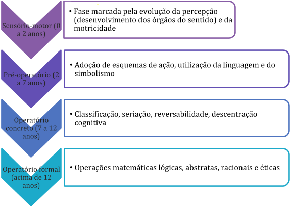
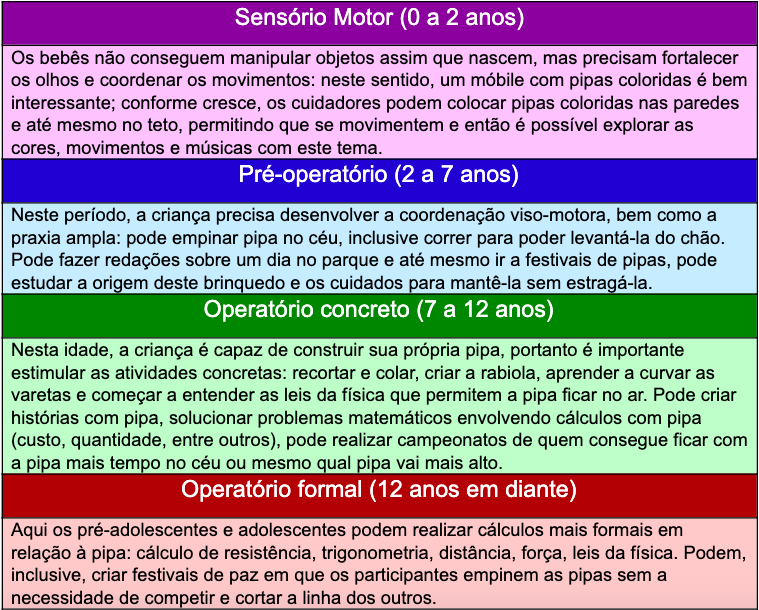
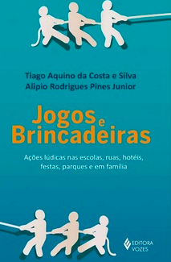

Brinquedoteca e Ludicidade na Educação
Unidade 4 | Aula 2

Disciplina | Brinquedoteca e Ludicidade na Educação
Conhecer as etapas do desenvolvimento cognitivo infantil.
Compreender como o lúdico é capaz de apoiar e estimular o desenvolvimento infantil.
Analisar o papel do professor-mediador.

Desenvolvimento cognitivo; lúdico; professor-mediador.
Você já acompanhou o crescimento de uma criança?
Percebeu como ela emprega, por exemplo, a capacidade linguística?
‣ É por volta de um ano que a criança começa a empregar a fala com sentido, mesmo que ainda não consiga pronunciar uma palavra inteira.
‣ Com o avanço da idade, já começa a utilizar a palavra, em seguida emprega duas ou mais palavras, por volta dos dois anos consegue falar frases simples, que vão ficando mais complexas conforme o tempo passa.
‣ No final da infância, a linguagem não é usada apenas como forma de comunicar desejos e necessidades, mas para expressar o próprio pensamento, argumentar e apropriar-se de conhecimento teórico mais abstrato.
O aprimoramento da linguagem é, talvez, a forma mais clara de compreender o desenvolvimento cognitivo de uma criança.
O desenvolvimento cognitivo do ser humano é uma ampla área de estudo que envolve o conhecimento de duas grandes ciências: a Psicologia e a Neurociência.
Procura-se compreender os processos de aquisição e emprego do conhecimento, passando pelo processamento de informações, a capacidade de captar informações, relacioná-las, armazená-las e evocá-las quando necessário, o desenvolvimento cerebral, a aplicação prática dos conhecimentos adquiridos e outras tantas situações em que o conhecimento é empregado.
Jean Piaget foi o psicólogo que mais estudou o desenvolvimento cognitivo em crianças e, a partir de suas pesquisas, descobriu que isso ocorre em fases distintas e sucessivas.
Até o momento, sua proposta continua sendo válida, com pequenas variações em decorrência dos estímulos ambientais: assim, uma criança que possui mais estímulos, acesso a diversidade de conhecimentos e de materiais, oportunidade de se relacionar com pessoas que possuam conhecimentos mais aprofundados (por exemplo: professores, irmãos mais velhos, etc.) pode se desenvolver de uma forma mais rápida do que uma criança que fica privada de tais estímulos.
Os estudos sobre estímulos socioambientais, que envolvem a interação entre seres humanos com diferentes níveis cognitivos e acesso a objetos diferenciados, os quais incluem brinquedos, brincadeiras e jogos, foi desenvolvida por Vygotsky e se justapõem à proposta epistemológica de Piaget.
Vamos retomar as conclusões de Piaget como base do desenvolvimento cognitivo e, em seguida, compreender o papel da ludicidade no desenvolvimento cognitivo infantil.

Fonte: elaborado pela autora.
Dessa forma, a ludicidade pode ser uma grande aliada do desenvolvimento cognitivo infantil, já que funciona como um instrumento poderoso que o estimula. Não é à toa que uma criança pequena prefere brincar com a caixa ao próprio brinquedo. Vamos entender isso melhor.
Se um bebê até os dois anos de idade está desenvolvendo a percepção e a motricidade, é natural que a ludicidade deve caminhar nesse sentido. Os canais perceptivos mais atuantes no processo de desenvolvimento cognitivo são a visão, o tato, o olfato, a audição e o paladar.
Por este motivo, quando o bebê ainda é bem pequeno, móbiles, brinquedos com textura suave, leves (o bebê ainda não tem muita força nem coordenação motora para segurar brinquedos pesados), músicas suaves e agradáveis e os cheiros aos quais está habituado são elementos que estimulam sua cognição.
Aos poucos, o bebê vai se habituando aos primeiros brinquedos, sons, cores, toques, cheiros, paladar, pessoas, rotina, e isso vai permitir que ele busque novidades e novos desafios.
Entre dois e sete anos, ocorre um grande salto cognitivo. Neurologicamente, aos dois anos, o cérebro se reorganiza, eliminando os neurônios que não são utilizados e iniciando o processo de especialização dos que permaneceram.
Assim, a criança inicia um processo de aprimoramento cognitivo: sua fala se torna cada vez mais especializada, assim como os movimentos, os pensamentos e a própria linguagem.
Torna-se curiosa, investigativa e gosta de fazer experiências para descobrir o que vai acontecer. Tem interesse em fazer o que os adultos fazem e utilizam-se da brincadeira simbólica para experimentar diversos papéis sociais. Interessa-se pela escrita e pela leitura, já que percebe que estas são atividades importantes.
Ao ingressar na escola, o conhecimento passa a ser mais sistematizado e a ludicidade é o elemento que apoia o processo de aprendizagem e o torna mais próximo da capacidade da criança pequena.
Desta forma, entre os dois e sete anos, as brincadeiras, os contos, os teatros e dramatizações, as músicas, os bonecos e os jogos pedagógicos são os elementos lúdicos que favorecem o desenvolvimento cognitivo.
Neste período, a criança precisa tocar, mexer, pegar, segurar, experimentar e todas as experiências que tragam resultados concretos, palpáveis e visíveis produzem melhor aprendizagem, o cérebro ainda não processa elementos abstratos com eficiência.
Ao ingressar no período operatório concreto, a criança já é capaz de operar com elementos lógicos, porém ainda necessita de experiências concretas.
Segundo Piaget, o interesse pela brincadeira e pelo lúdico se transforma em interesse pela aprendizagem e pelo conhecimento por volta dos 7-8 anos.
Embora a criança ainda busque elementos lúdicos e concretos para aprender, cada vez mais o desafio toma o lugar das brincadeiras e o prazer de resolver um problema se equipara ao prazer de brincar. Ela se satisfaz em aprender e em perceber sua evolução, o que a estimula cognitivamente.
O desenvolvimento da inteligência é marcante nesta idade, embora ainda esteja em um processo egocêntrico.
Isso muda a partir dos 12 anos, quando se inicia o processo operatório formal.
Após esta idade, a infância dá espaço para a pré-adolescência e a cognição alcança a capacidade de lidar com questões mais abstratas.
Assim, o interesse por questões sociais, amorosas, religiosas e éticas vão se tornando objetos de conhecimento.
Todo conhecimento adquirido, o uso das palavras e da lógica potencializam a cognição a se apropriar de temas cada vez mais abstratos e complexos, de forma que o adolescente para a desenvolver opinião própria e criticidade.
A ludicidade passa a ser mais elaborada, sendo explorada a partir de jogos de estratégias, jogos coletivos e até mesmo jogos esportivos.
A fase operatória formal é a última no estágio de evolução cognitiva. Após os 12 anos de idade, não ocorrem mais transformações em termos de desenvolvimento dos processos de aprendizagem, apenas um aprimoramento daquilo que se constituiu anteriormente.
O cérebro se torna cada vez mais capaz de lidar com múltiplos fatores que compõem os objetos de aprendizagem. Ainda assim, quando a ludicidade acompanha os processos de estudo, a aprendizagem se torna mais eficiente.
Neste momento, a ludicidade vai aparecer em histórias fundamentadas teoricamente, em resolução de problemas do cotidiano, em discussões sobre a modernidade, na busca de hipóteses e na produção de reflexões.
A coletividade é muito importante agora, tanto para encontrar um sentido comum nas buscas individuais quanto para sustentar a própria identidade.
Você já parou para pensar que está justamente nesta fase chamada operatório formal?
Como você estrutura seus processos de aprendizagem?
Gosta de discutir assuntos sobre ética, relacionamentos humanos, política, religião?
Relembre: quando era criança, estes temas eram sua prioridade?
Consegue perceber as diferenças cognitivas quando analisa sua própria evolução?
Espero que tenha aproveitado este estudo!
Nesta Contextualização, vamos desenvolver uma reflexão diferenciada. Vamos empregar um elemento lúdico e ver a potencialidade de utilização pedagógica em cada etapa de evolução cognitiva. Nosso estudo se dará com uma pipa.
Pipas podem ser um tema muito interessante para o desenvolvimento das habilidades cognitivas de crianças muito pequenas e até para adolescentes. Este recurso nem sempre é utilizado nas escolas e explorado por professores. Vamos contextualizar a utilização deste elemento lúdico na tabela abaixo:
Utilização da pipa e o desenvolvimento das habilidades cognitivas em cada estágio de desenvolvimento piagetiano
Fonte: elaborado pela autora.
A partir deste infográfico, queremos agora chamar a atenção do professor-mediador para as diversas possibilidades dos elementos lúdicos que fazem parte do dia-a-dia das crianças e adolescentes e podem servir como propostas para o desenvolvimento cognitivo dos estudantes.
A escolha e as propostas são atividades a serem desenvolvidas pelos professores-mediadores e precisam ser adequadas e estimulantes a cada faixa etária.

Jean Piaget: estágios de desenvolvimento | Didatics (11 min)
O vídeo descreve os estágios de desenvolvimento escritos por Piaget. Piaget afirma que todas as pessoas passam por 4 estágios de desenvolvimento: estágio sensório-motor, estágio pré-operatório, estágio operatório concreto e estágio operatório formal. Considera que o amadurecimento cerebral é o grande propulsor que faz a criança avançar pelos estágios.
DIDATICS. Jean Piaget: estágios de desenvolvimento. 10 jun. 2019. Disponível em: https://www.youtube.com/watch?v=CRokAZi_RWM. Acesso em: 24 fev. 2020.
FREEPIK. BRGFX. Três papagaios coloridos no céu azul. Disponível em: https://br.freepik.com/vetores-gratis/tres-papagaios-coloridos-no-ceu-azul_1624406.htm#page=1&query=pipa&position=18. Acesso em: 24 fev. 2020.
Copyright©2020, Faculdade OPEN. Todos os direitos reservados.
É proibida a reprodução e distribuição total ou parcial deste material, com ou sem fins lucrativos, em qualquer meio, sem prévia autorização.